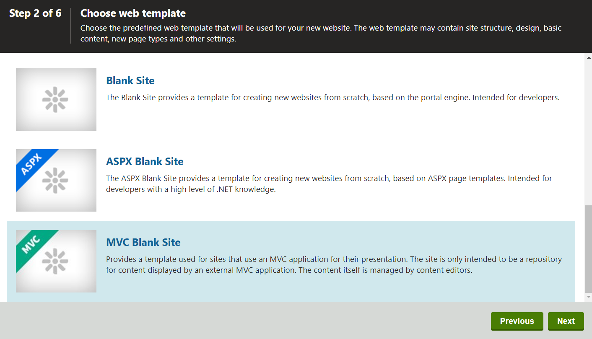

Creating a new MVC site
This page is a part of a tutorial, which you should follow sequentially, from the beginning to the end. Go to the first page: Getting started with Kentico.
Creating the site
For this tutorial, install new MVC blank site:
In the Kentico administration interface, open the Sites application.
Click New site wizard.
Select Use web template and click Next.
In Step 2, scroll down the list of templates and select the MVC Blank Site in the wizard and click Next.

Type the details for the new website:
Site display name: MEDIO clinic MVC
Site code name: MEDIOClinicMVC
Domain name: do not change the value in this field
Click Next.
In Step 4, do not change anything and click Next.
This step allows you to select the objects which the system imports to the new site.
If you meet the following warning in Step 5, click Next.
Warning: Failed to start site 'MEDIO clinic MVC', there is already a site running under this domain alias. You first need to stop the existing site and then start the new site manually.
Two sites cannot run under one domain simultaneously. For this tutorial, we will stop the previously installed site (usually Dancing Goat site) after we have finished creating the site.
In Step 6, click Finish.
The system creates the new blank MVC website and displays it in the Sites application.
If you have previously installed a different site, stop it now, so that you can run the new one:
Stop ( ) the website which is running on the domain that you want to use (localhost in our case).
Run (
 ) the MEDIO clinic MVC website.
) the MEDIO clinic MVC website.Refresh your browser to load the MEDIO clinic MVC.
Running more websites simultaneously
If you want to run more websites simultaneously, you need to set different domain names for them. See Setting up multiple websites for more information.
Setting the presentation URL
As the next step, you need to define a URL for your content only site. This will help your content editors to access the live site directly from the Pages application, create hyperlinks in the text editor or use the Preview feature to examine what the content on their page will look like on the live site.
Edit (
 ) the MEDIO clinic MVC website.
) the MEDIO clinic MVC website.On the General tab, set the Presentation URL to: http://localhost/MedioMVC
Click Save.
The MVC application will use the http://localhost/MedioMVC URL to display content that the website editors will manage through the Kentico user interface.
Setting up web farm synchronization
Because your MVC website and Kentico instance run as separate applications with a shared database, you need to set up web farm synchronization.
Go to the Settings application.
Navigate to Versioning & Synchronization -> Web farm.
Set the Web farm mode to Automatic.
Click the Save button.
Automatic web farm mode creates web farm servers for both the Kentico administration application and the connected MVC application. When a website editor or administrator makes changes to the site content or settings in Kentico, the web farm synchronization ensures that the connected MVC application correctly reflects these changes.
Your content only site and your Kentico instance are set up to be used with an MVC application.
Previous page: MVC development — Next page: Creating a new MVC application
Completed pages: 2 of 10
Ο Ο ΟΟOΟΟΟ Ο Ο